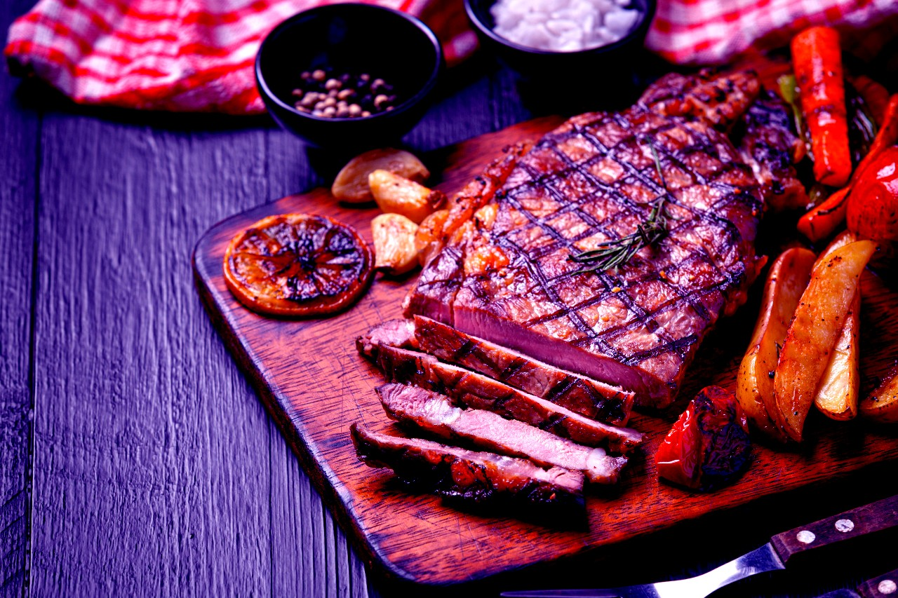

Asado Argentino
Origen...
Claudio Valerio, un ingeniero apasionado por la historia asegura que el “asado de tira” , símbolo argentino, se originó en la ciudad de Campana cuando el The River Plate Fresh Meat Co., el primer frigorífico de Sudamérica se instalara en esa ciudad y que, con la incorporación de una sierra, se logró cortar los huesos de las reses.

Fue ese el tema que quedó rondando en la cabeza de Claudio Valerio, un ingeniero mecánico y electrónico, actor e historiador vocacional que luego de una charla informal con un amigo se decidió a investigar para llegar a establecer que ese corte, tal y como se lo sirve actualmente, tuvo su origen en la ciudad de Campana, Buenos Aires. Este hecho, que se convertiría en hito culinario e histórico para el distrito, sucedió durante el siglo XIX con la instalación del frigorífico The River Plate Fresh Meat Co. en el pueblo bonaerense que crecía a orillas del Río Paraná de Las Palmas, en el actual territorio de Campana.
Fiesta del Asado en Cholila 2022El chimichurri en el asado
Receta de salsa chimichurri
- 4 dientes de ajo
- 2 cucharadas de oregano
- 1 cucharada de comino
- 1 cucharada de guindilla cayena(polvo)
- 1 cucharada de pimenton dulce
- 125 ml de aceite de oliva virgen extra
- 125 ml de vinagre
- sal


Return to top